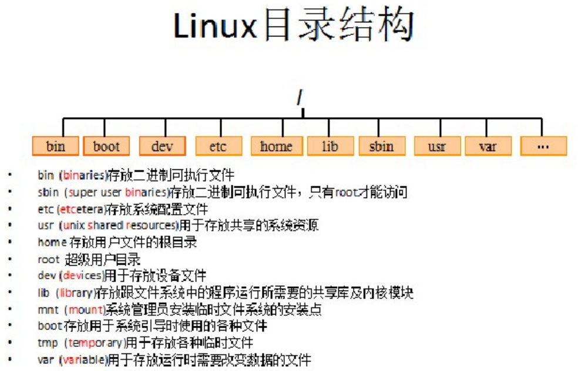

Linux系统学习（以CentOS为例）
1.1Unix介绍
Unix是一个强大的多用户、多任务操作。于1969年在AT&T（美国电话电报公司）的贝尔实验室开发。
1.2Linux介绍
Linux是一套免费的类Unix操作系统
Linux是一套免费使用和自由传播的类Unix操作系统，可以任意修改其源代码。
Linux存在着许多不同的Linux版本，但他们都使用了Linux内核。例如:redhat、CentOS、红旗、SuSe、ubuntu
1.3Linux目录结构

- /: 根目录，一般根目录下只存放目录，不要存放文件。/etc、/bin、/dev、/lib、/sbin应该和根目录放置在一个分区中
- /bin: /usr/bin:(binaries) 存放二进制可执行文件。如常用的命令ls、tar、ma、cat等
- /boot: 放置Linux系统启动时用到的一些文件/boot/vmlinuz为Linux的内核文件，以及/boot/gurb。建议单独分区，分区大小100M即可
- /dev: (devices)存放Linux系统下的设备文件，访问该目录下某个文件，相当于访问某个设备。常用的是挂载光驱mount/dev/cdrom/mnt
-
/etc: (etcetera) 系统配置文件存放的目录，不建议在次目录下存放可执行文件。
重要的配置文件有/etc/inittab、/etc/fstab、/etc/init.d、/etc/X11、/etc/sysconfig、/etc/xinetd.d 修改配置文件之前己得备份。注意：/etc/X11存放与
X windows有关的设置。
-
/home: 系统默认的用户家目录，新增用户账户时，用户的家目录都存放在此目录下，''表示当前用户的家目录，
''test表示用户test的家目录。建议单独分区，并设置较大的磁盘空间，方便用户存放数据
- /lib: (library) /usr/lib: /usr/local/lib: 系统使用的函数库的目录，程序在执行过程中，需要调用一些额外的参数时需要函数库的协助，比较重要的目录为/lib/modules
- /root: 系统管理员root的家目录，系统第一个启动的分区为/，座椅最好将/root和/放置在一个分区下
-
/sbin: (super user binaries) /usr/sbin: /user/local/sbin: 放置系统管理员使用的可执行命令。如fdisk、shutdown、mount等。与/bin不同的是，这几个目录是给
系统管理员root使用的命令。一般用户只能“查看”而不能设置和使用。
-
/usr: (unix shared resources) 应用程序存放目录，/usr/bin 存放应用程序，/usr/share 存放共享数据，/usr/lib 存放不能直接运行的，
却是许多程序运行所必须的一些函数库文件。/usr/local：存放软件升级包。/usr/share/doc：系统说明文件存放目录。/usr/share/man：程序说明
存放目录，使用man ls 时会查询/usr/share/man/man1/ls.1.gz 的内容建议单独分区，设置较大的磁盘空间
-
/var: (variable) 放置系统执行过程中经常变化的文件，如随时更改的日志文件 /var/log，/var/log/message: 所有的登录文件存放目录，
/var/spool/mail：邮件存放的目录，/var/run: 程序或服务启动
- /opt: 给主机额外安装软件所拜访的目录。以前的Linux系统中，习惯放置在/usr/local 目录下
- /tmp: (temporary) 一般用户或正在执行的程序临时存放文件的目录，任何人都可以访问，重要数据不可放置在此目录下
- /srv：服务启动之后需要访问的数据目录，如www服务需要访问的网页数据存放在/srv/www/内
- /mnt:/media: (mount) 光盘默认挂载点，通常光盘挂在于/mnt/cdrom下，也不一定，可以选择任意位置进行挂载
-
/proc: 此目录的数据都在内存中，如系统核心，外部设备，网络状态，由于数据都存放于内存中，所以不占用磁盘空间，比较重要的目录有/proc/cpuinfo、
/proc/interrupts、/proc/dma、/proc/ioports、/proc/net/*等
3.1 磁盘管理
3.1.1 ls命令
- ls（list）功能：列出目录内容
-
格式：ls[参数][文件或目录]
-a或-all 下所有文件和目录。注意隐藏文件、特殊目录、. 和 ..
-l 使用详细格式列表
-t 用文件和目录的更改时间排序
-r 反向排序
--help 在线帮助
-
常用
ls -l 简化版ll
ls -al
3.1.2 cd命令
- cd(change directory)功能：切换目录
-
语法：cd[目录]
cd ~ : 当前用户目录
cd / : 根目录
cd - : 上一次访问的目录
cd .. : 上一级目录
cd : 缺省当前用户目录
pwd命令
未完待续~~~